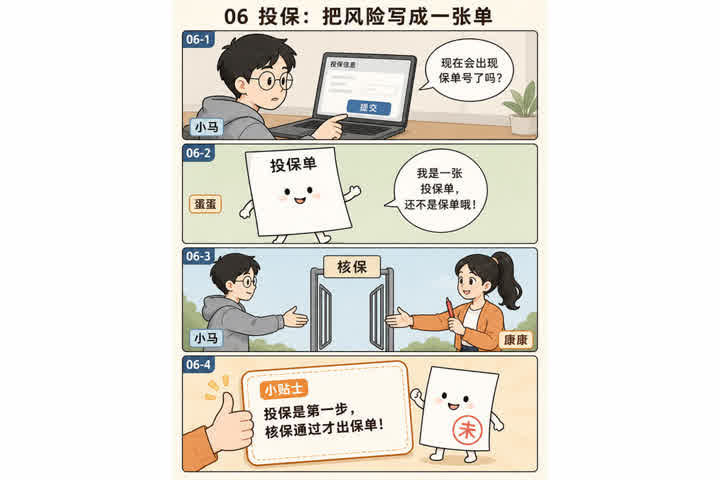
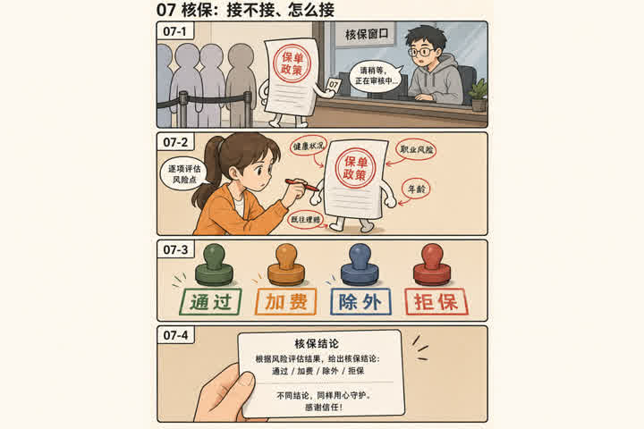
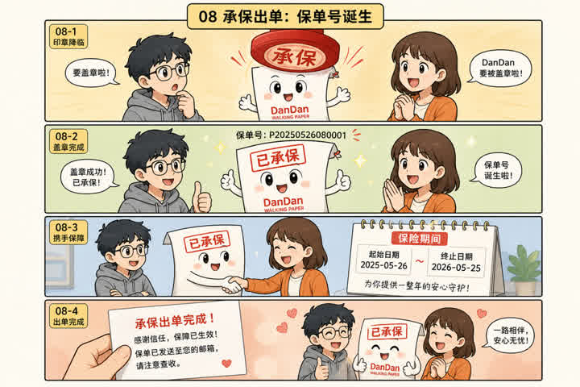
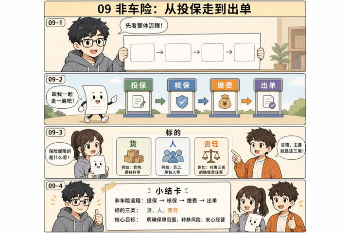
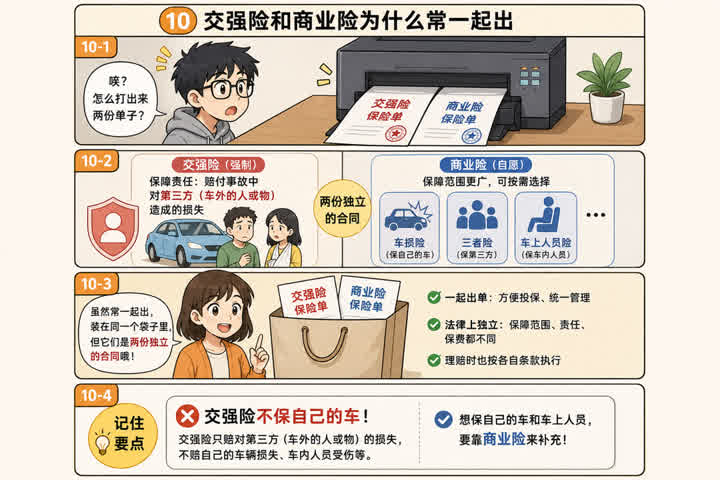
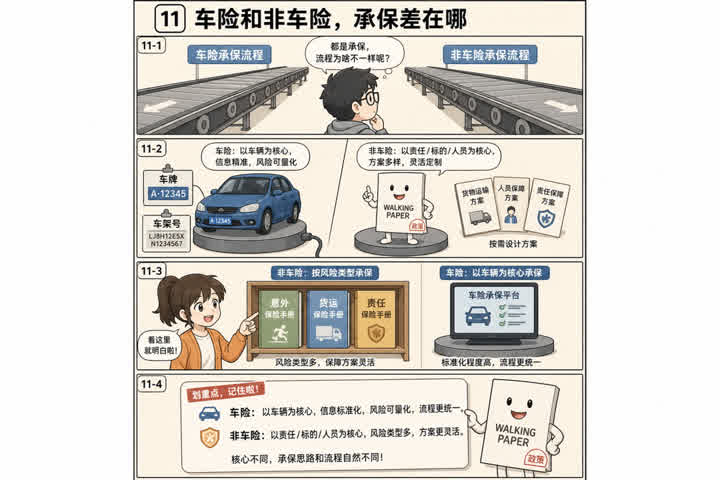
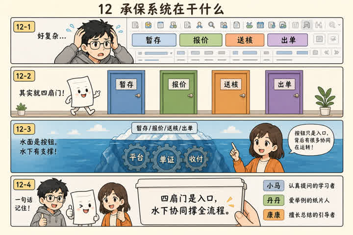

06投保：把风险写成一张单

记住这一句
投保是客户在申请，合同还没成立。这时候的单叫投保单，不叫保单。
前端会碰到
投保提交成功 ≠ 已承保。状态应该是「已投保/待核保」，别把保单号提前展示成已生效。

投保是客户在申请，合同还没成立。这时候的单叫投保单，不叫保单。
投保提交成功 ≠ 已承保。状态应该是「已投保/待核保」，别把保单号提前展示成已生效。

核保是公司在挑风险：正常过、加费、除外、拒保，都是核保结论。
核保中不要让用户以为已经买上。前端要能展示：通过 / 加费待确认 / 拒保，并允许加费后重新提交。

承保完成，合同成立，保单号才算正式出生。保单是合同的书面证明；没出纸，合同仍可能已经成立。
出单后才展示保单号、保险期间、电子保单。收钱和出单的时序要问清楚：有的险种先出单后收费，有的必须缴清才生效。

非车险走同一条链：投保 → 核保 → 承保出单。但「保的是什么」决定了中间要填哪些东西。
非车险出单页的主信息是标的和方案，不是车牌。不要复用车险的车辆组件。

交强险是法定必买，只管车外第三者；商业险是自愿加的，用来修车、赔本车人员、补第三者限额。两张保单，经常一次录、一次出。
一次投保可能生成两张保单（交强险一张、商业险一张）。订单不要做成「一个保单号打天下」。
交强险不赔本车、不赔车上的人。自己撞墙上，交强险帮不了，要靠商业险里的车损险。

车险看「这辆车+这个人+这个地区」；非车险看「这个标的+这套方案」。核保规则、平台、单证都不一样。
不要用同一套校验和同一套状态机硬套两套业务。地区码在车险几乎是一等公民。

承保系统不是「存表单的数据库」，它在做：录单、校验、报价、核保、出单、对接平台和收付。
前端每个按钮对应一种承保决策。提交、暂存、报价、送核、出单，不要合成一个万能保存。